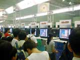
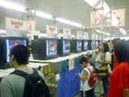
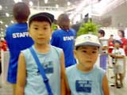
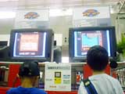
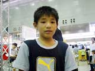

| ●ポケモンでパネポン 9月21日発売予定 |
大連鎖がとっても気持ちいいパズルゲーム「パネポン」と、おなじみ「ポケモン」がひとつになりました。今回は1Pプレイに6つ、2Pプレイに3つものゲームモードが用意されているので、かなり遊び応えがありますよ。そしてなんといっても、クルクルと表情を変えるかわいいポケモンたち！ ゲームを進めていくうちに新しいポケモンが登場するらしく、一度プレーを始めると、ついついハマってしまいそう。体験コーナーは人であふれかえり、やむなく5分のプレー時間を3分に変更していました。
|
「状況によって変わるポケモンたちの表情に注目して欲しいですね。もちろん、パズルとしても奥の深いゲームですので、ぜひやりこんで、友達との対戦プレーも楽しんでください」と、説明員の西村さんも、大きな反響に大満足のご様子でした。
|
| ●ドンキーコング2001 12月発売予定 |
本当にゲームボーイ!? と疑ってしまいそうなほど、キレイなゲーム画面にびっくり。名作「ドンキーコング」のゲームボーイカラー専用版です。盗まれたバナナを取り返しながら、がんばってディディーを助けてくださいね。
子供達に大人気のドンキーコングだけあって、体験ブースにはお父さん、お母さんといっしょに並んでいる小さなお子さんの姿が目立ちました。大きな子は正面のテレビモニターを、小さな子は手もとのゲームボーイカラーを見ながら、真剣にプレーしていましたよ。
|
スーパーファミコン版を全部覚えているというツワモノ、福原 悠くんに感想を聞いてみると、「スーファミ版と違うところがいっぱいあって、面白かった」とのことでした。
発売されたら、また遊んでくださいね。
|
| ●怪人ゾナー 10月21日発売予定 |
ある日突然送られてきたナゾラーてちょうを持ってナンゾウ小学校に転向した主人公が、学校を守るためにナゾラーバトルで戦うという"なぞベンチャー"ゲームです。スペースワールドでは、発売を記念した「怪人ゾナースペシャルライブ」も行われています。
怪人ゾナーが用意したなぞなぞは、全部でなんと600問！ しかも答えは選択式ではなく、自分で入力するというのは斬新ですね。リモコンを使って新しいなぞなぞを手に入れるナゾラーリモコン機能や、友達と対戦できる通信ナゾラーも面白そうです。
|
怪人ゾナーが大好きという将大くん、卓也くん兄弟も熱心に遊んでいました。そばにいたスタッフの顔には、「？シール」が貼ってありましたね。
|
| ●伝説のスタフィー（仮称） 12月発売予定 |
空高く浮かぶテンカイ王国から、海に落っこちてしまった王子スタフィー。これは、海の中を旅しながら、いろんな仲間と協力してテンカイを目指すアクションゲームです。なにせ冒険の舞台は海の中。フワフワ動くスタフィーを操るのは難しい…、んじゃないかなぁ、と思って体験ブースを見ていると、なんとなんと、皆さん初めてプレーなのに、器用にスタフィーを泳がせてますね。最近の子供達って、本当に上手です。
|
 そんななか、とくに印象的だったのが石手 卓也くん。「前の人がやっていたのを見てたから」と謙遜していましたが、とっても上手でしたよ。お母さんのほうは「毎日ゲームばかりやってるんですよ」と、ちょっぴり苦笑いでした。でも、今日だけは1日中遊ばせてあげてくださいね。
|